Expliquer leur formation en émettant des hypothèses sur les forces responsables.
🔗 Sans ce chapitre, impossible de lire une carte géologique (Ch.3), de comprendre où se trouvent les nappes d'eau (Ch.4), ni d'expliquer la formation des phosphates (Ch.5) et des gisements de pétrole (Ch.6).
📚 Préacquis
Le sous-sol est formé de roches disposées en strates (couches) formées par accumulation de matériaux = sédimentation
Les roches dures (calcaires) forment les parties saillantes du relief, les roches tendres (argiles) forment les creux
Les strates peuvent renfermer des fossiles : restes d'êtres vivants conservés dans les roches
L'étude des strates permet de reconstituer l'histoire géologique d'une région
Les strates peuvent être horizontales, inclinées ou déformées (plissées, fracturées)
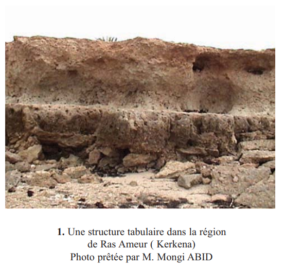
Doc. 1 p.17 — Structure tabulaire à Ras Ameur (Kerkena)
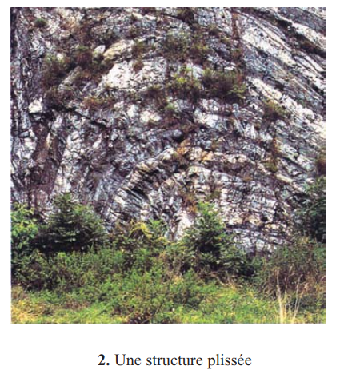
Doc. 2 p.17 — Structure plissée
❓ 3 Questions directrices
Comment explique-t-on l'horizontalité des couches à l'origine ?
Quelles informations fournit l'étude des strates ?
Comment explique-t-on les déformations des roches ?
🧠 Comprendre avant de mémoriser
Ce chapitre répond à une question fondamentale : comment lire l'histoire de la Terre dans les roches ? Les géologues ont développé des règles pour décoder ce que les strates racontent — leur âge, leur milieu de formation, et les forces qui les ont déformées.
Clique sur chaque notion pour explorer en profondeur · Les connexions avec les autres chapitres sont révélées à la fin
📖
La stratigraphie
Lire le temps dans les roches
🌋
La tectonique
Les forces qui déforment le livre
🦕
Les fossiles
Marqueurs de temps et de milieu
⚠️
3 Pièges classiques
Les erreurs fréquentes à éviter
🔗
Liens avec le manuel
Ce chapitre sert à quoi ensuite ?
⏳
Échelle des temps
4,5 milliards d'années résumés
📖 La Stratigraphie — lire le temps dans les roches
La sédimentation est le processus de base : les matériaux transportés par l'eau ou le vent se déposent dans un bassin (la mer). Couche après couche, comme les pages d'un livre. La couche du bas est plus ancienne — c'est l'expérience intuitive du bécher avec les sables colorés.
Mais ce "principe de superposition" a une limite : si les strates ont été retournées par les forces tectoniques, la couche du bas peut être plus récente. C'est pour ça que les géologues ont besoin des deux autres principes pour confirmer.
Le principe de continuité permet de connecter des affleurements distants — le même calcaire visible à Jbel Zaghouan et à Jbel Boukornine = même couche, même âge. C'est la base de la corrélation stratigraphique, fondamentale pour construire une carte géologique.
💡 La datation relative vs la datation absolue
La stratigraphie donne une chronologie RELATIVE (couche A est plus ancienne que couche B) mais pas un âge en millions d'années. Pour l'âge absolu, les géologues utilisent la radiochronologie (désintégration radioactive). L'échelle des temps géologiques a été construite progressivement en combinant les deux méthodes.
🌋 La Tectonique — les forces qui froissent et déchirent
Les strates se déposent horizontalement. Mais les mouvements des plaques tectoniques exercent des contraintes sur ces roches. Deux types de contraintes, deux réponses différentes selon la rigidité des roches :
🗜️ Compression (rapprochement)
Si la roche est plastique (argile, roche chaude) → elle se plisse comme une nappe qu'on pousse par les deux bouts. Si la roche est rigide (calcaire froid) → elle casse → faille inverse avec chevauchement.
↔️ Étirement (éloignement)
Les blocs s'effondrent les uns par rapport aux autres → faille normale. Le compartiment s'abaisse du côté du plan de faille. C'est ce qui crée les rifts et les grabens (fossés d'effondrement).
💡 Pourquoi l'anticlinal est-il souvent une vallée et non une montagne ?
L'érosion attaque préférentiellement le sommet des anticlinaux car les roches y sont fracturées et étirées (tension au sommet du pli). Résultat paradoxal : les anticlinaux évoluent souvent en vallées (relief inversé) et les synclinaux deviennent des reliefs. C'est le relief appalachien.
🦕 Les Fossiles — marqueurs de temps et de milieu
Les fossiles sont les outils les plus puissants du géologue stratigraphe. La distinction essentielle :
🕐 Fossile stratigraphique
Répond à la question quand ?
Critères : durée de vie courte + large répartition géographique
Ex : Ammonites (Secondaire), Nummulites (Éocène)
🌊 Fossile de faciès
Répond à la question où et comment ?
Critères : milieu de vie caractéristique
Ex : coraux (mer chaude peu profonde), Globigérines (mer profonde)
Les deux ensemble permettent de dater ET de reconstituer l'environnement de dépôt. C'est exactement ce qu'on fera au Ch.5 pour les phosphates — dater leur formation (Éocène) et comprendre dans quel milieu marin ils se sont déposés.
Échelle des temps géologiques simplifiée — du Précambrien au Quaternaire
⚠️ 3 Pièges classiques à déjouer
⚠️ Piège 1 — Le principe de superposition n'est PAS universel ▼
Le principe dit "la couche du bas est plus ancienne". SAUF si les strates ont été retournées. Quand les plis sont très intenses (plis couchés, nappes de charriage), une couche ancienne peut se retrouver AU-DESSUS d'une couche récente. On utilise alors les fossiles pour vérifier l'ordre réel. C'est pourquoi le manuel précise "ce principe n'est pas applicable quand les strates sont très déformées".
On confond souvent la structure tectonique et la forme du relief. Un anticlinal (voûte vers le haut) peut très bien être une vallée en relief inversé — l'érosion a creusé le sommet fracturé. Inversement, un synclinal peut former une montagne (relief appalachien). Il faut toujours raisonner sur la structure des strates, pas sur la topographie.
Les noms "normale" et "inverse" décrivent la géométrie, pas la fréquence. Une faille normale résulte d'un étirement (le compartiment s'abaisse du côté du plan de faille). Une faille inverse résulte d'une compression (chevauchement, raccourcissement). Contre-intuitivement, on pourrait croire que la compression donne la faille "normale" — c'est l'inverse !
🔗 Ce chapitre sert de fondation à tout le Thème 1
Sans comprendre comment les roches se déposent et se déforment, on ne peut pas lire une carte géologique, ni comprendre où se trouvent les nappes phréatiques, ni expliquer la formation des phosphates et du pétrole.
Chapitre 3 → Carte géologique
Principe de superposition
Lire l'âge des formations géologiques sur une carte → utilise directement la superposition et la continuité.
Chapitre 4 → Ressources en eau
Failles et perméabilité
Les failles normales créent des fractures → chemins préférentiels pour les eaux souterraines → localisation des aquifères.
Chapitre 5 → Les phosphates
Fossiles stratigraphiques + faciès
Les phosphates se sont formés à l'Éocène (Tertiaire) dans des mers chaudes peu profondes → datés par fossiles + milieu reconstitué par fossiles de faciès.
Chapitre 6 → Le pétrole
Anticlinaux = pièges à pétrole
Le pétrole migre vers le haut et se piège dans les anticlinaux (voûtes imperméables). Comprendre les plis est indispensable pour localiser les gisements.
⏳ L'Échelle des Temps Géologiques — repères essentiels
💡 Mémo pour retenir l'ordre des ères (du plus ancien au plus récent)
Précambrien · Primaire · Secondaire · Tertiaire · Quaternaire Mémo : "Papa Peut Savoir Tout Quelquefois" Ou les premières lettres : P · P · S · T · Q
💭 Questions de réflexion — teste ta compréhension
1. Tu observes deux falaises séparées par 50 km. Elles contiennent toutes les deux des calcaires à Nummulites. Que peux-tu en déduire sur l'âge et le milieu de formation de ces calcaires ?
Les Nummulites sont des fossiles stratigraphiques de l'Éocène inférieur (Tertiaire). Par le principe d'identité paléontologique, les deux calcaires sont du même âge (Éocène). Par le principe de continuité, c'est probablement la même couche continue entre les deux sites. Les Nummulites vivant dans des mers assez profondes et chaudes → ce sont aussi des fossiles de faciès → les deux calcaires se sont formés dans un milieu marin chaud et profond.
2. Un géologue trouve un anticlinal dont le coeur (centre) contient des calcaires crétacés. Les flancs contiennent des calcaires tertiaires. Est-ce normal ? Pourquoi ?
Oui, c'est normal et attendu. Dans un anticlinal, la couche centrale est la plus ancienne (elle était là avant le plissement, les autres couches se sont déposées par-dessus). Le Crétacé (Secondaire) est plus ancien que le Tertiaire → le coeur de l'anticlinal = calcaires crétacés, les flancs = calcaires tertiaires. C'est un critère de vérification : si le coeur est plus récent que les flancs, c'est un synclinal, pas un anticlinal.
3. Pourquoi le pétrole (Ch.6) se piège-t-il souvent dans les anticlinaux et jamais dans les synclinaux ?
Le pétrole, moins dense que l'eau, migre vers le haut dans les roches poreuses (roche réservoir). L'anticlinal forme une voûte — si elle est surmontée d'une roche imperméable (roche couverture), le pétrole est piégé sous la voûte et ne peut plus monter. C'est le piège structural anticlinal. Dans un synclinal, la courbure est dirigée vers le bas → pas de voûte → le pétrole continue de migrer vers le haut et s'échappe. C'est la connexion directe entre ce chapitre et le Ch.6.
🪨 Activité 1 — Les Principes de la Stratigraphie (p.18–22)
1. La Sédimentation et le Principe de Superposition
🧪 Expérience du bécher (p.18)
Couche
Couleur
Ordre dépôt
Âge relatif
c (haut)
Sable rouge
3ème déposée
La plus récente
b (milieu)
Sable blanc
2ème déposée
Intermédiaire
a (bas)
Sable brun
1ère déposée
La plus ancienne
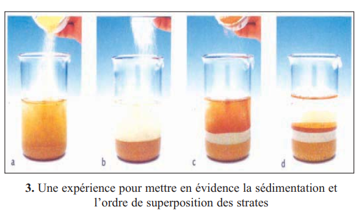
Doc. 3 p.18 — Expérience du bécher
💡 Principe de superposition — énoncé exact
"Les couches se déposent horizontalement. Une couche est plus récente que celle qu'elle recouvre." Limite : ce principe n'est pas applicable quand les strates sont très déformées (retournées). On parle de chronologie relative (pas de date en millions d'années, seulement un ordre).
Expérience du bécher — 3 couches de sable coloré
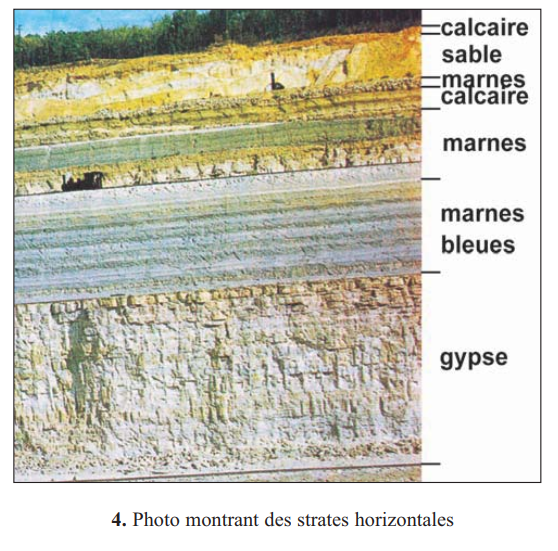
Doc. 4 p.19 — Strates horizontales dans la nature
✏️ Mini-quiz
1. Dans l'expérience du bécher, la couche de sable brun (a) déposée en premier est la couche la plus .
2. Le principe de superposition permet d'établir une datation .
3. Ce principe n'est pas applicable quand les strates sont .
2. Principe de Continuité
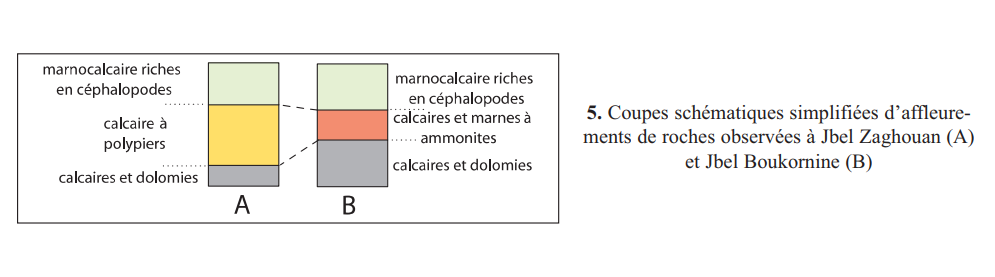
Doc. 5 p.19 — Coupes schématiques de Jbel Zaghouan (A) et Jbel Boukornine (B)
Site
Couche observée
Même couche ?
Conclusion
Jbel Zaghouan (A)
Calcaire à polypiers
✅ OUI (même faciès)
Même âge en tous ses points → les deux sites ont été sous la même mer au même moment
Jbel Boukornine (B)
Calcaires rouges
💡 Principe de continuité — énoncé exact
"Une même couche a le même âge en tous ses points." Cela permet d'établir des relations entre des strates éloignées géographiquement (corrélation stratigraphique). C'est la base de la cartographie géologique : on peut relier des affleurements distants si on identifie la même couche.
✏️ Mini-quiz
1. Le principe de continuité dit qu'une même couche a le même . Il permet de .
3. Principe d'Identité Paléontologique — Les Fossiles tunisiens
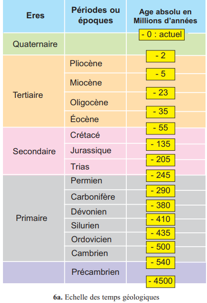
Doc. 6a p.20 — Échelle des temps géologiques
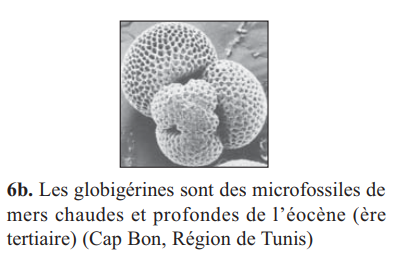
Doc. 6b p.20 — Globigérines (Éocène, Cap Bon)
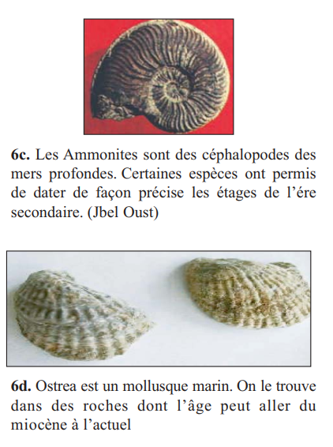
Doc. 6c p.20 — Ammonites (Secondaire, Jbel Oust)
Fossile
Ère / Période
Milieu
Type
Nummulites
Éocène inférieur (Tertiaire)
Mer assez profonde et chaude
Strati. + Faciès
Globigérines
Éocène (Tertiaire)
Mers chaudes et profondes
Faciès
Ammonites
Ère Secondaire
Mers profondes
Stratigraphique
Ostrea
Miocène → actuel
Mer (mollusque marin)
Faciès
Trilobites
Primaire (Cambrien-Dévonien)
Mer peu profonde
Stratigraphique
Rudistes
Crétacé (Secondaire)
Mer chaude peu profonde
Stratigraphique
💡 Fossile stratigraphique vs fossile de faciès
Fossile stratigraphique (chrono-stratigraphique) : durée de vie courte + large répartition géographique → marqueur de TEMPS précis. Fossile de faciès : vécu dans plusieurs périodes mais milieu de vie caractéristique → marqueur d'ENVIRONNEMENT de dépôt. Certains fossiles peuvent être les deux (ex : Nummulites).
Comparaison fossile stratigraphique vs fossile de faciès
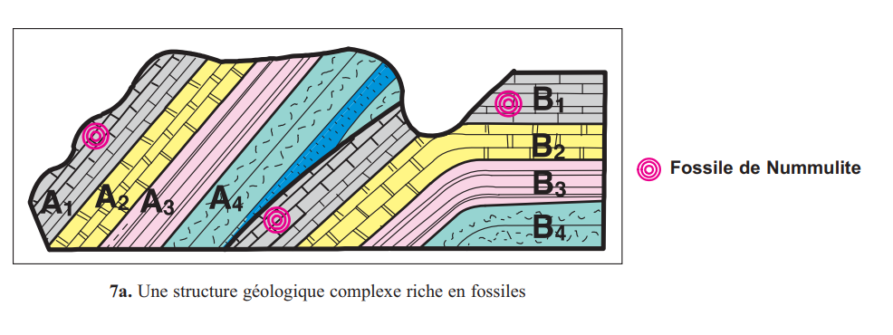
Doc. 7a p.21 — Structure géologique complexe riche en fossiles
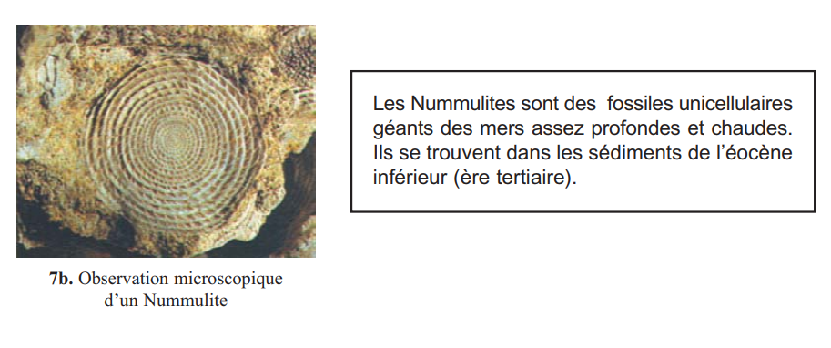
Doc. 7b p.21 — Nummulite observé au microscope
📌 Retenons (bilan p.27 + objectifs du programme)
Stratigraphie :
étude de la disposition des strates permettant de les dater les unes par rapport aux autres. [Obj. : Retrouver les principes de la stratigraphie]
Tectonique :
étude de la déformation des strates. [Obj. : Identifier les structures géologiques]
Principe de superposition :
une couche est plus récente que celle qu'elle recouvre.
Principe de continuité :
une même couche a le même âge en tous ses points.
Fossile chrono-stratigraphique :
vécu à une période déterminée → marqueur de temps. [Obj. : Utilité géologique des fossiles]
Fossile de faciès :
milieu de vie caractéristique → marqueur d'environnement. [Obj. : Détermination des faciès]
✏️ Mini-quiz
1. Les Nummulites sont des fossiles de l'ère qui vivaient dans des mers .
2. Les Ammonites sont des fossiles .
3. Deux strates contenant les mêmes fossiles stratigraphiques sont .
🌋 Activité 2 — Les Plis et les Failles (p.23–28)
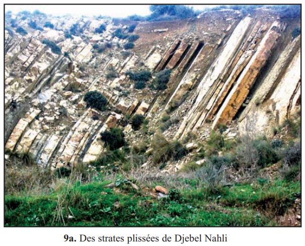
Doc. 9a p.23 — Strates plissées à Djebel Nahl
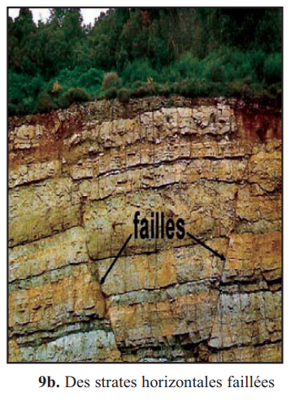
Doc. 9b p.23 — Strates horizontales faillées
1. Les Plis — déformation souple par compression
Expérience : pâte à modeler en couches entre deux planchettes → appliquer 2 forces convergentes (compression) → les couches se plissent. Les roches plastiques répondent à la compression par un plissement.
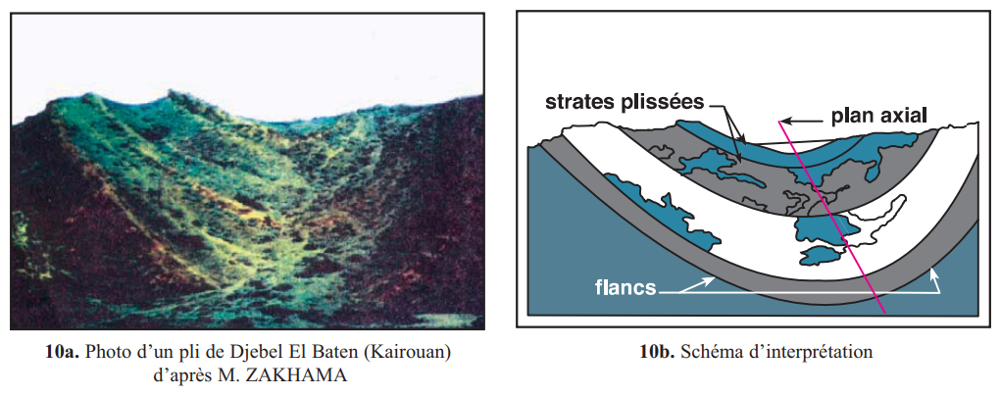
Doc. 10 p.23 — Photo et schéma d'interprétation d'un pli (Djebel El Baten, Kairouan)
Type de pli
Courbure
Plan axial
Couche centrale
Anticlinal
Vers le haut (voûte)
Vertical
La plus ancienne
Synclinal
Vers le bas (creux)
Vertical
La plus récente
Pli droit
Symétrique
Vertical
Forces égales des 2 côtés
Pli couché
Asymétrique
Horizontal
Forces inégales
💡 Moyen mnémotechnique : anticlinal vs synclinal
Anticlinal → anti = contre → il va à l'encontre de la gravité → courbure vers le haut. Synclinal → syn = avec → il va dans le sens de la gravité → courbure vers le bas. Ou encore : l'Anticlinal a une forme de A (ou tente), le Synclinal a une forme de cuvette (bol).
Anticlinal (voûte) vs Synclinal (creux) — avec ancienneté des couches
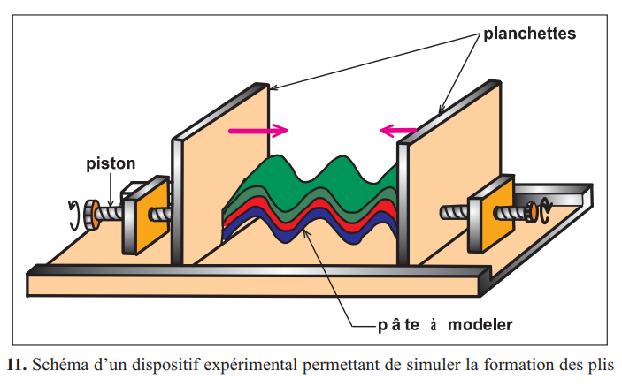
Doc. 11 p.24 — Dispositif expérimental de formation des plis
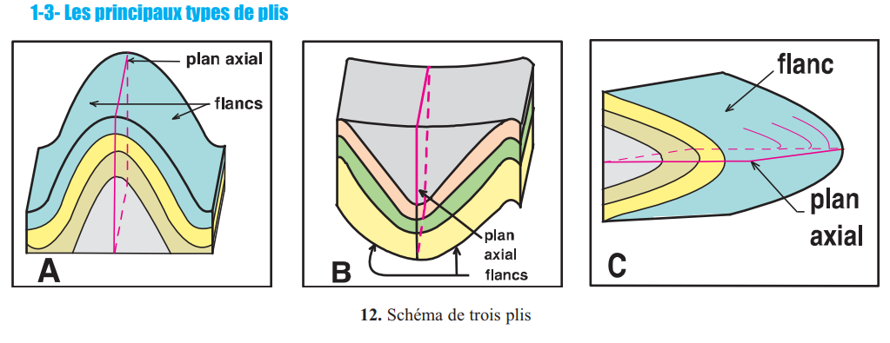
Doc. 12 p.24 — Les principaux types de plis
✏️ Mini-quiz — Les Plis
1. Dans un anticlinal, la couche centrale est la plus .
2. Les plis sont causés par des contraintes de .
3. Un pli droit se caractérise par un plan axial .
2. Les Failles — déformation cassante
Expérience : paraffine refroidie (roche rigide) entre deux planchettes → forces convergentes → cassure = faille. Les roches rigides répondent à la compression par une cassure avec déplacement.
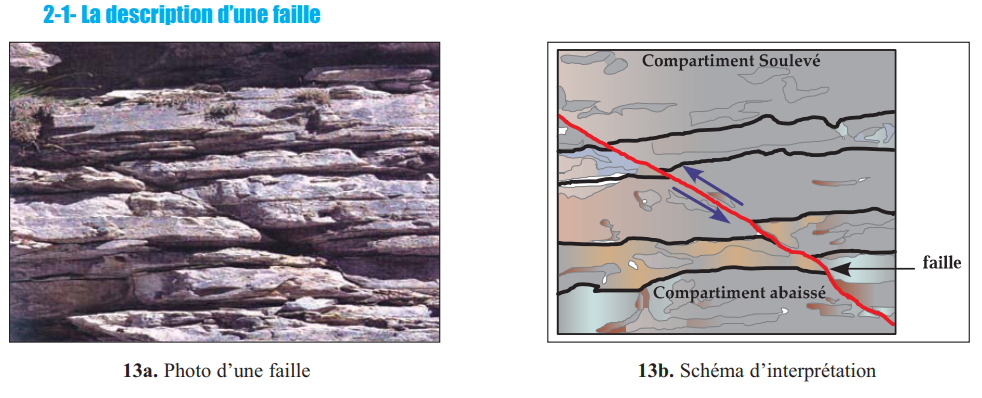
Doc. 13 p.25 — Photo et schéma d'interprétation d'une faille
Type de faille
Contrainte
Compartiment abaissé
Rejet horizontal
Faille normale
Étirement
Du côté du plan de faille
Allongement du terrain
Faille inverse
Compression
Chevauchement (dessus)
Raccourcissement du terrain
💡 Le mot "rejet" en tectonique
Le rejet est le déplacement engendré par une faille — la distance dont les deux compartiments se sont déplacés l'un par rapport à l'autre. Une faille normale a un rejet horizontal correspondant à un allongement (extension). Une faille inverse a un rejet correspondant à un raccourcissement (compression, chevauchement).
💡 Lien direct avec le Ch.4 (ressources en eau)
Les failles normales créent des fractures dans les roches. Ces fractures augmentent la perméabilité et deviennent des chemins préférentiels pour les eaux souterraines. Les zones de failles sont souvent associées à des sources et des aquifères. Les géologues cherchent les failles pour localiser les nappes phréatiques.
Faille normale (étirement) vs Faille inverse (compression/chevauchement)
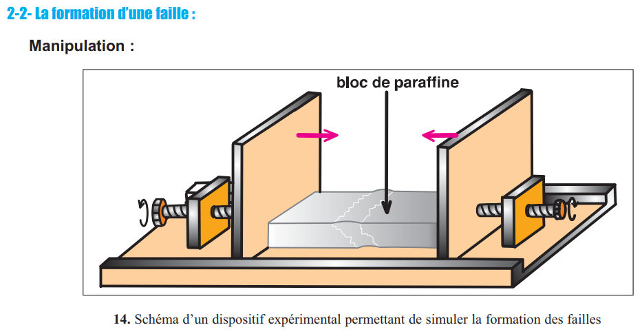
Doc. 14 p.25 — Dispositif expérimental de formation des failles
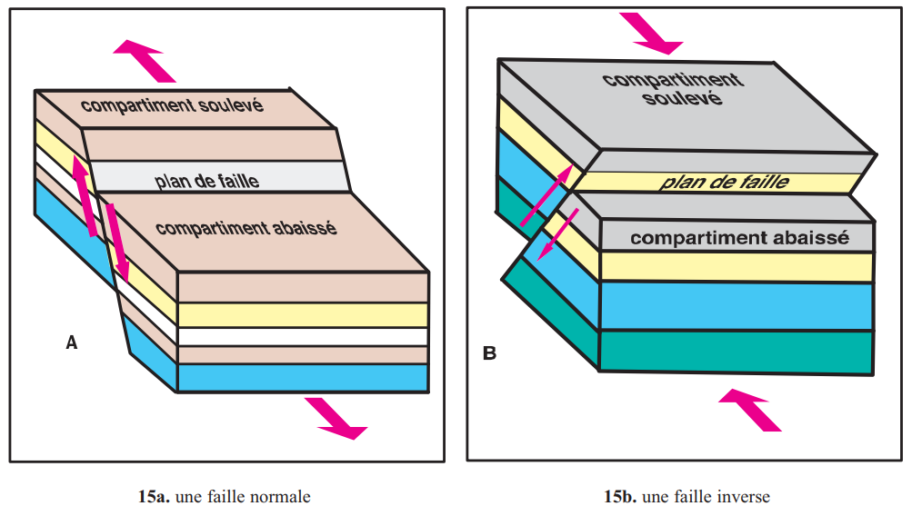
Doc. 15 p.26 — Faille normale et faille inverse
📌 Retenons (bilan p.28 + objectifs du programme)
Pli anticlinal :
couches dont la courbure est dirigée vers le haut. Couche centrale = la plus ancienne.
Pli synclinal :
couches dont la courbure est dirigée vers le bas. Couche centrale = la plus récente.
Faille normale :
résultat de contraintes d'étirement. Compartiment abaissé du côté du plan de faille. Rejet = allongement. [Obj. : Identifier les failles normales]
Faille inverse :
résultat de contraintes de compression. Compartiment soulevé = chevauchement. Rejet = raccourcissement. [Obj. : Expliquer leur formation]
Rejet :
déplacement engendré par une faille.
✏️ Mini-quiz — Les Failles
1. Une faille normale résulte de contraintes d' et le compartiment abaissé se trouve .
2. Une faille inverse résulte de contraintes de .
3. La différence entre pli et faille : dans un pli la roche est , dans une faille elle est .
📋 Bilan (p.27–28)
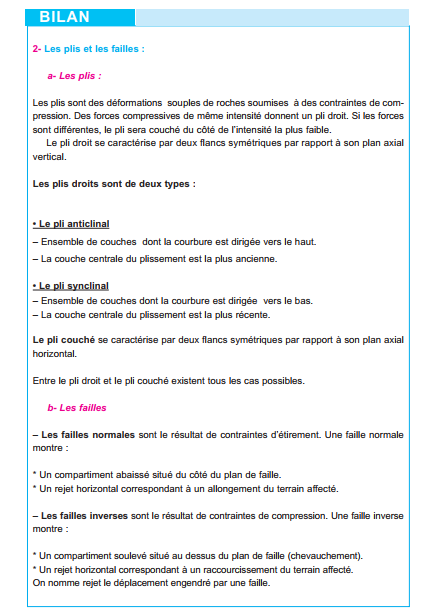
Schéma bilan p.28 — Plis et failles
1La stratigraphie est l'étude de la permettant de les dater les unes par rapport aux autres (datation ). La tectonique est l'étude de la .
🔑 Les 3 principes en une phrase
Superposition : en bas = plus ancien. Continuité : même couche = même âge partout. Identité paléontologique : même fossile stratigraphique = même âge.
2Principe de superposition : une couche est plus que celle qu'elle . Inapplicable si les strates sont très .
3Les fossiles sont des marqueurs de . Les fossiles de caractérisent un .
4Les plis sont des déformations causées par la . L'anticlinal a sa courbure vers le . Le synclinal a sa courbure vers le .
5La faille normale résulte d'un . La faille inverse résulte d'une .
🃏 Flashcards — Vocabulaire clé
✏️ QCM — Manuel (p.29) + Questions complémentaires
Vérification question par question. Cliquez sur "Vérifier" après chaque réponse.
📋 QCM du manuel — Page 29
📝 QCM complémentaires — Approfondissement
📝 Exercices interactifs
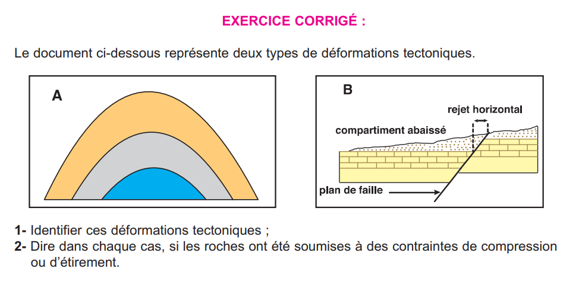
Exercice corrigé p.30 — Identifier les déformations tectoniques
Structure géologique complexe avec 4 strates B1, B2, B3, B4 et des Nummulites dans B1. Les strates sont superposées normalement (non déformées).
Strate
Position dans la coupe
Âge relatif
Justification
B4
La plus haute (au-dessus de toutes)
B1
La plus basse (sous B2, B3, B4)
B1 (avec Nummulites)
Strate B1
🦴 Ex.2 — Conditions de formation des calcaires à polypiers (exercice non corrigé p.30)
On trouve des calcaires à polypiers à Jbel Zaghouan, Jbel Ressas et Jbel Boukornine. Ils contiennent des coraux (polypiers) et des fossiles uniquement du Crétacé.
Les polypiers (coraux) actuels vivent dans des mers , . En appliquant le principe d', les calcaires à polypiers se sont formés dans un milieu marin . La présence de fossiles uniquement crétacés permet de dater ces calcaires de l'ère .
🌋 Ex.3 — Associer chaque structure à sa contrainte (exercice corrigé p.30)
Glisser-déposer pour placer les structures dans le bon ordre : de la déformation par COMPRESSION à la déformation par ÉTIREMENT
?
⠿ Pli anticlinal droit — roches plastiques comprimées
?
⠿ Faille normale — compartiment abaissé, allongement du terrain
?
⠿ Strates horizontales non déformées — pas de contrainte tectonique
?
⠿ Faille inverse — chevauchement, raccourcissement du terrain
🦕 Ex.4 — Identifier l'âge et le milieu à partir d'un fossile
Exercice de datation et de reconstitution paléoenvironnementale à partir des fossiles tunisiens.
Fossile trouvé
Ère / Période
Milieu de formation
Type de fossile
Ammonites dans une roche
Globigérines dans une roche
Trilobites dans une roche
🗺️ Ex.5 — Exercice de synthèse : Lire une coupe géologique simple (type examen)
Contexte : Une coupe géologique montre 4 strates empilées normalement : de bas en haut — C1 (grès avec Ammonites), C2 (calcaire avec Nummulites), C3 (argile sans fossile), C4 (sable avec Cardium et Strombes). Consignes : 1- Déterminer l'âge relatif de chaque strate. 2- Reconstituer le milieu de formation. 3- Identifier le principe utilisé.
1. La strate C1 contient des Ammonites → elle date de l'ère . Les Ammonites vivaient dans des mers .
2. La strate C2 contient des Nummulites → elle date de l'. Le milieu de formation était une mer .
3. La strate C4 contient des Cardium et Strombes → elle date du . Ces fossiles sont caractéristiques de .
4. L'ordre des strates (C1 → C2 → C3 → C4) a été établi grâce au principe de .
5. Pour dater précisément C3 (sans fossile), on peut utiliser le principe combiné de superposition et d'identité paléontologique : C3 est plus récente que C2 () et plus ancienne que C4 ().